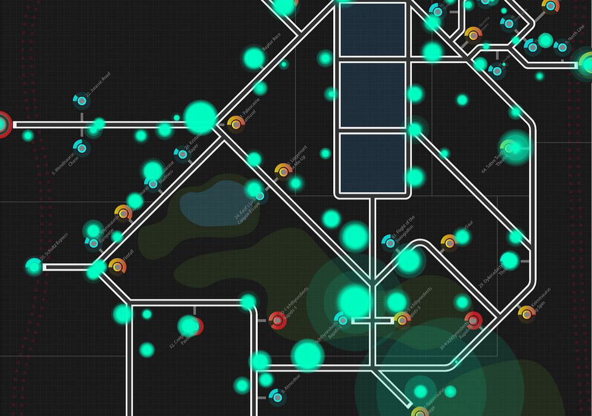
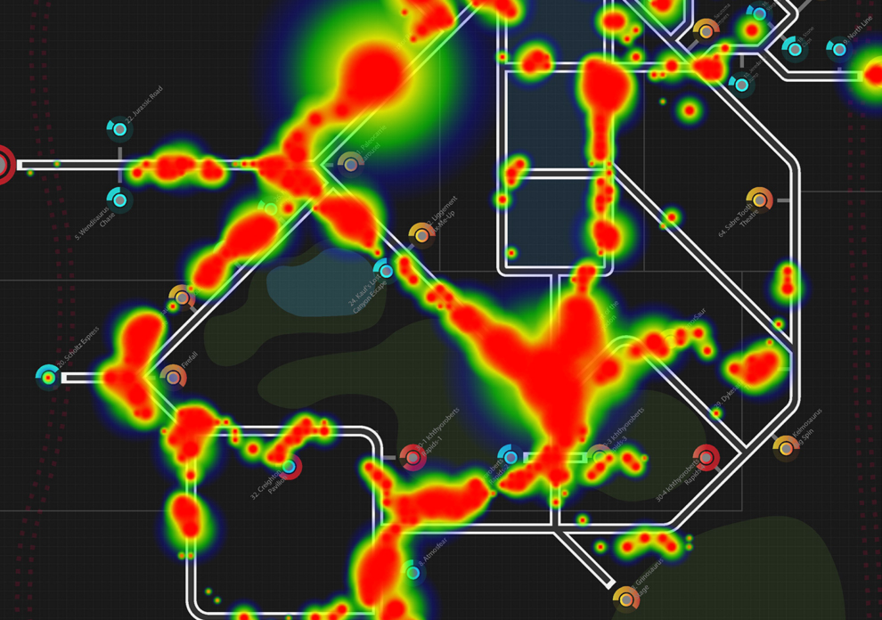
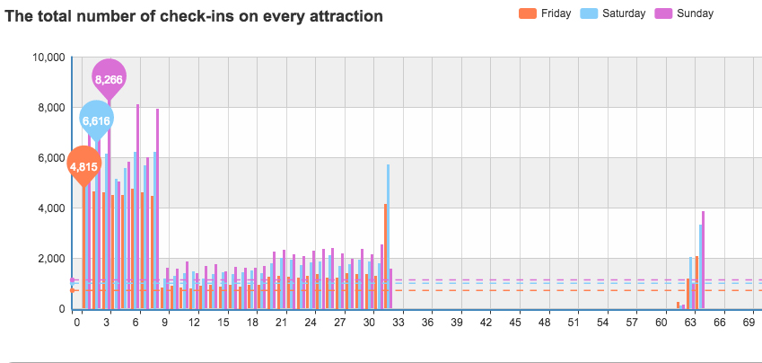
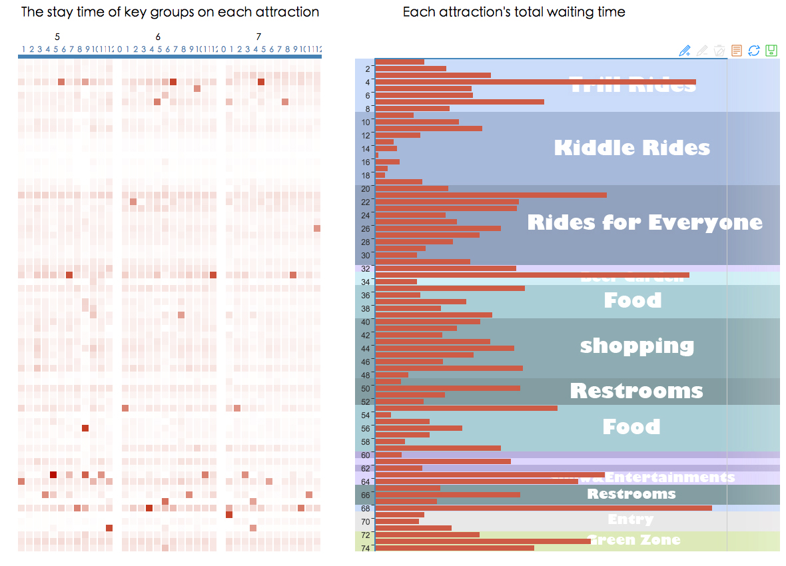

Type: Data visualization
Team Member: Ruolan Tang, Yuanyuan Ding, Mengdan Yuan
Description: A data visualization project based on the challenge posted by VAST Challenge 2015. A crime happened in the park and we need to analyze the datas provided by the park to find out who committed the crime and when that happened. Created for the course Data Visualization on Cross-media.
My contributions: Team leader, programming.
Tools: d3.js, E-charts, C++
   
Video:
Word cloud generator, personal work.